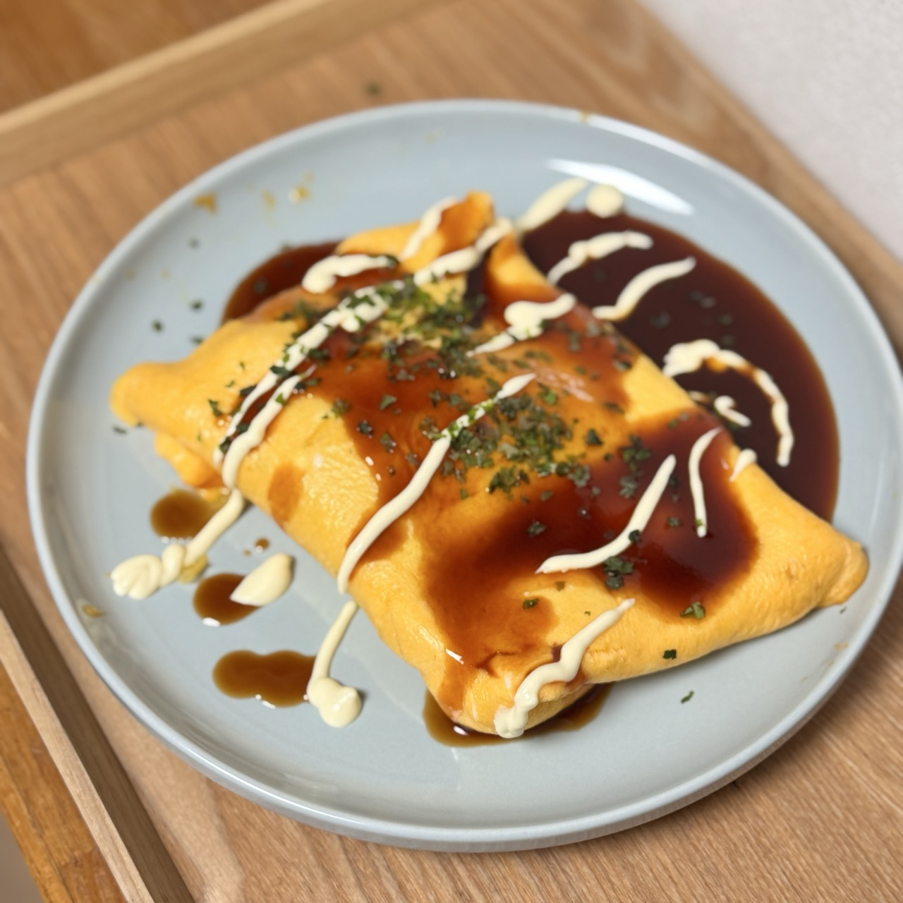

Home
Tonpeiyaki

Description
My other favorite T-yaki meal that consists of shredded cabbage, your meat of choice wrapped inside a soft thin egg omelette. My favorite part about this one is the okonomiyaki drizzle and the aonori sprinkle✨
Ingredients
- 2 eggs
- 2 tbsp whole milk
- 100 g thin-sliced pork belly (about 4 slices)
- 50 g shredded green cabbage
- 1 tbsp finely chopped green onion
- 1 tsp cooking oil
- 1 pinch salt and pepper
- ½ tbsp Worcestershire sauce
- ½ tbsp oyster sauce
- 1 tbsp ketchup
- 1 tsp honey
- ½ tsp soy sauce
- 1 tsp Japanese mayonnaise
- 1 pinch aonori (dried green laver powder)
Steps
- Mix the Worcestershire sauce, oyster sauce, ketchup, honey, and soy sauce in a bowl to make the okonomiyaki sauce
- In another bowl, whisk the eggs and milk until smooth
- Heat a pan on medium and drizzle in the oil
- Add the cabbage and green onion, season with salt and pepper, and stir for 1 minute until softened
- Set the cabbage aside on a plate
- In the same pan, cook the pork belly until crispy on both sides
- Move the pork to the cabbage plate and wipe off excess oil from the pan
- Reduce the heat to medium-low and pour in the egg mixture
- Swirl the pan to keep the omelette fluffy
- Once the edges set, add the cabbage and pork
- When the omelette is about 80% cooked, carefully fold the edges over
- Flip it onto a plate and reshape with plastic wrap if needed
- Drizzle with the okonomiyaki sauce and add the mayo
- 🔑 Sprinkle with aonori
Enjoy!